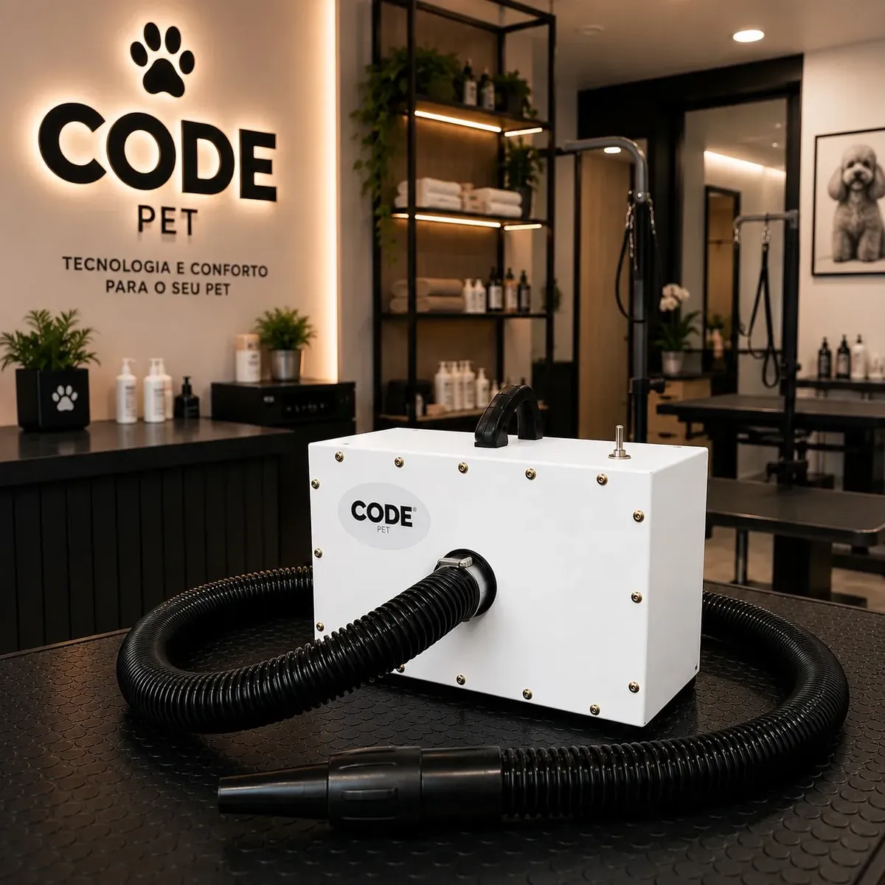
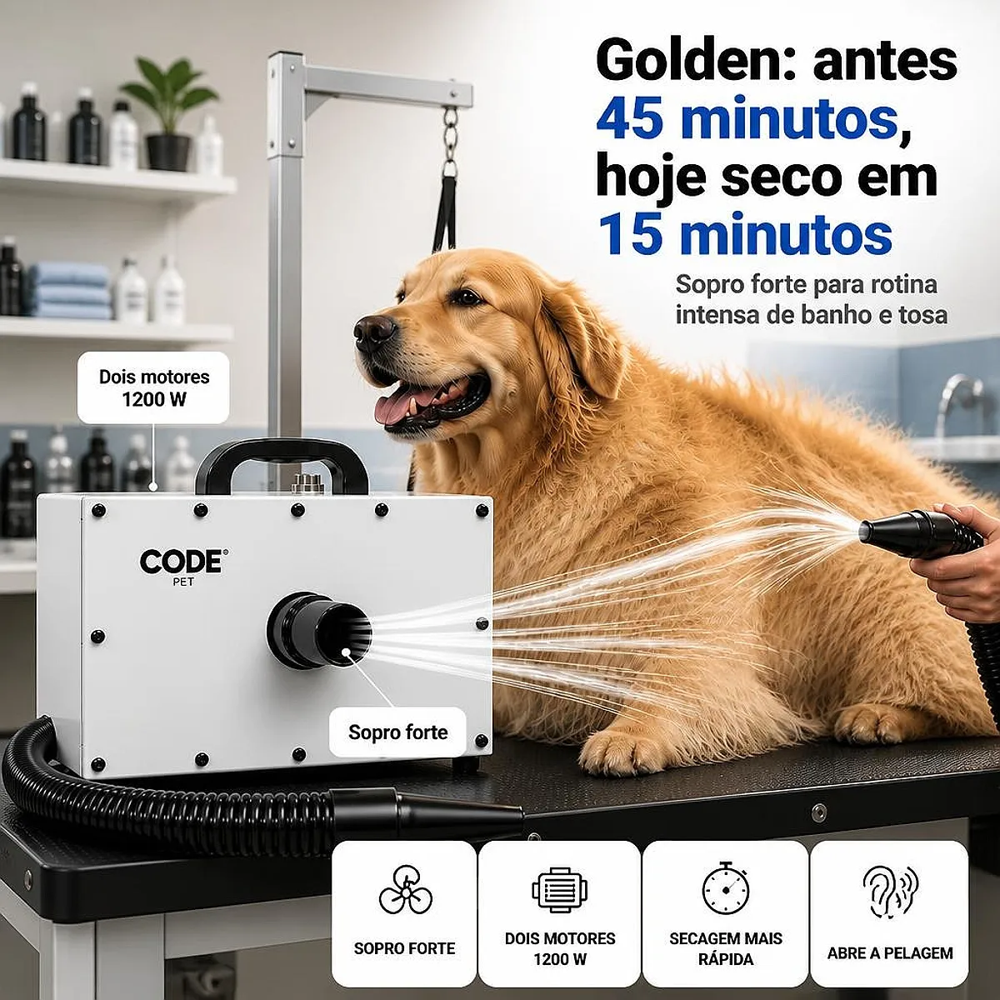
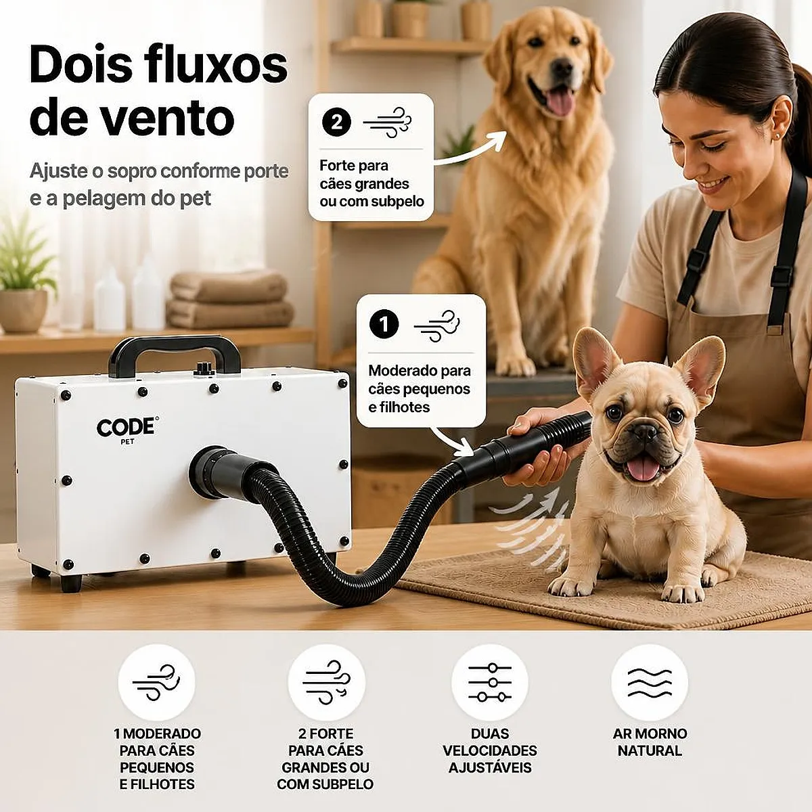

Secar um cão só com toalha demora, cansa o tutor e — em cães de pelo duplo — quase nunca tira a umidade que fica presa perto da pele. É aí que entra o soprador para pet: um aparelho pensado para gerar grande volume de ar em temperatura controlada, secando o subpelo por dentro e não só a superfície. Este guia explica como funciona um soprador pet de dois motores, a diferença dele para um secador e soprador comum, os cuidados de uso e para quem realmente vale a pena — em casa ou num pet shop.
Resumo rápido
- O Brasil tem uma população pet numerosa e um setor em expansão: o faturamento do mercado pet nacional somou R$ 77,96 bilhões em 2025, segundo dados da Abinpet/IPB divulgados pela Câmara Setorial do Ministério da Agricultura (Gov.br, 2025), o que sustenta a demanda por equipamentos de banho e tosa como o soprador para pet shop.
- Um soprador de dois motores soma dois fluxos de ar independentes, resultando em mais força e vazão do que um aparelho de motor único, segundo a proposta de fabricantes desse tipo de equipamento.
- O soprador não substitui o secador de mão comum: ele prioriza volume de ar em temperatura mais baixa, indicado para remover o excesso de água do subpelo antes do acabamento com secador ou tesoura.
- Cuidados básicos de uso — distância da pele, ambiente ventilado e supervisão constante — reduzem o risco de desconforto ou susto no animal.
Uso recomendado — para quem seca cães com frequência
Resumo em uma linha: Um soprador de dois motores acelera bastante a secagem em cães de pelo grosso ou duplo, sendo mais útil quanto maior a frequência de banhos.
Ideal para: Pet shops, tosadores profissionais e tutores de cães de pelo longo ou duplo que tomam banho com regularidade.
Não ideal para: Quem banha o pet raramente e já resolve bem só com toalha e secador comum de baixa potência.
Onde comprar: Mercado Livre, com frete e condições de pagamento variáveis por vendedor.
Um soprador para pet — também chamado de secador e soprador para pet — é um aparelho de banho e tosa criado para gerar um fluxo de ar forte o suficiente para "abrir" o pelo do animal e expulsar a água que fica presa perto da pele, especialmente em raças de pelo duplo (subpelo denso). Diferente do secador comum, que aquece bastante o ar para acelerar a evaporação, o soprador aposta em alto volume de ar em temperatura mais amena, o que seca mais rápido sem concentrar calor num único ponto por muito tempo.

No caso de um soprador pet 2 motores, como o modelo "Super Turbo" analisado neste guia, a proposta do fabricante é justamente somar a vazão de dois motores independentes — o que tende a reduzir o tempo total de secagem em comparação com aparelhos de motor único, principalmente em cães de porte médio a grande ou de pelagem densa.
É comum ver os termos soprador e secador para pet usados quase como sinônimos, mas eles cumprem papéis diferentes na rotina de banho:
| Etapa | Soprador para pet | Secador comum (tipo pistola) |
|---|---|---|
| Função principal | Remover o excesso de água do subpelo logo após o banho | Finalizar a secagem e ajudar a modelar o pelo |
| Prioridade | Volume de ar (vazão) | Temperatura e direcionamento |
| Melhor uso | Cães de pelo longo, duplo ou muito volumoso | Acabamento e cães de pelo curto |
| Ordem de uso | Primeiro, ainda com o pelo bem molhado | Depois do soprador, para finalizar |
Na prática, muitos tosadores profissionais usam os dois aparelhos em sequência: o soprador para tirar o grosso da água rapidamente, e o secador comum para o acabamento fino. Por isso o termo soprador e secador para pet aparece tanto — muitas vezes a compra é pensada como um kit de rotina, não como escolha de "um ou outro".
Por gerar um jato de ar forte, o soprador pede alguns cuidados básicos para não assustar ou machucar o animal:

Um soprador para pet shop com dois motores compensa mais o investimento para quem seca vários animais por dia — cada minuto economizado por atendimento se multiplica ao longo da agenda. Para tosadores autônomos e pet shops, a potência extra também ajuda com raças de pelo duplo (como Golden Retriever, Husky Siberiano e Spitz Alemão), que retêm bastante água perto da pele.
Já para o tutor que banha só o próprio cão em casa, a decisão depende do perfil do pet: cães de pelo curto e porte pequeno costumam secar bem só com toalha e um secador comum. Mas para quem tem um cão de pelo longo, denso ou duplo, e banha o animal com regularidade, um soprador reduz bastante o tempo de secagem e o desconforto do cão de ficar molhado por mais tempo — inclusive no inverno, quando o pelo úmido demora mais para secar naturalmente. Se a rotina de cuidados em casa também inclui a alimentação, veja também nosso review de comedouro para cachorro.
Esta análise foi construída com base na proposta de funcionamento de sopradores de dois motores amplamente descrita por fabricantes e vendedores desse tipo de equipamento, cruzada com boas práticas de banho e tosa recomendadas por profissionais da área. Não testamos fisicamente o modelo específico vinculado neste guia, então recomendamos sempre conferir as especificações completas, a potência declarada e as avaliações de outros compradores diretamente no anúncio antes de fechar a compra. Veja nossa política editorial e de afiliados para entender como avaliamos e selecionamos produtos.
🐾 Cansado de perder tempo secando seu pet com toalha e ainda deixar o subpelo úmido? Um soprador de dois motores resolve isso em muito menos tempo — confira agora o preço e a disponibilidade do soprador pet 2 motores Super Turbo antes que a oferta acabe.
Ver preço no Mercado Livre →Link de afiliado: podemos receber uma comissão por compras feitas através deste link, sem custo adicional para você.
Não. O secador de cabelo humano costuma trabalhar com ar mais quente e vazão menor, pensado para fios finos. O soprador para pet prioriza volume de ar (vazão) em temperatura mais baixa, para secar o subpelo sem ressecar a pele do animal.
Pode variar por modelo, mas em geral dois motores tendem a gerar mais ruído do que um só, já que cada motor soma sua própria vibração e fluxo de ar. Cães sensíveis a barulho devem ser apresentados ao aparelho aos poucos, ainda desligado, antes do primeiro uso.
Dá para usar em casa, principalmente se você tosa ou seca o próprio cão com frequência. Para tutores de um único pet de porte pequeno, um soprador mais simples pode bastar; já pet shops e tosadores que atendem vários animais por dia se beneficiam mais da potência extra de dois motores.
Sim, desde que usado com cuidado redobrado: gatos costumam ser mais sensíveis a ruído e ao jato de ar do que a maioria dos cães, então a introdução ao aparelho deve ser ainda mais gradual.
Um soprador para pet de dois motores resolve um problema real de quem banha cães com frequência: a demora e o desconforto de deixar o subpelo úmido por horas. Ele não substitui o secador comum de acabamento, mas acelera muito a etapa mais demorada — tirar o excesso de água logo após o banho. Vale considerar, principalmente, se você tem um cão de pelo longo ou duplo, ou atende vários animais por dia em um pet shop.
🐶 Dê adeus às horas secando seu cão com toalha — veja agora o preço atual do soprador pet 2 motores Super Turbo no Mercado Livre.
Quero ver o soprador para pet no Mercado Livre →Link de afiliado: podemos receber uma comissão por compras feitas através deste link, sem custo adicional para você.
Nildo Alves — curadoria de produtos pet no Smart Pet Gadgets. Testa e pesquisa produtos para cães e gatos, cruzando especificações de fabricante com boas práticas veterinárias e dados de mercado.
Sobre o Smart Pet Gadgets · Contato · Política editorial e de afiliados